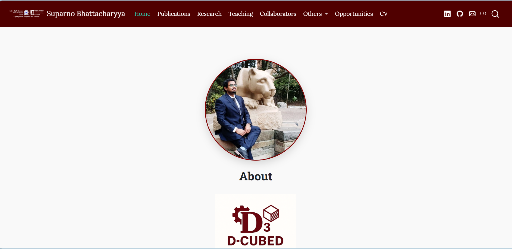

Expert support for Academicians.
Elegant websites for Everyone.
Specialized remote support and modern web development for university faculty and researchers. Less time on overhead and outdated templates—more time on the work that actually matters.
Support Behind the Scenes. Presence Out Front.
Whether you need someone to absorb the operational load of academic life, or a modern website that puts your work front and centre—both pillars share one standard: precision, transparency, and deep-focus attention to your research.
Async, specialized support synchronized with the rhythm of academic life—grant cycles, submission windows, and competing priorities—so you can focus on high-impact work.
Explore Support →Modern, frictionless websites that replace clunky templates—engineered with precision and backed by clean, maintainable code.
Explore Web Dev →Services Built for Academics
From looming grant cycles to tight submission windows, I help you navigate competing priorities so you can focus on the work that matters.
Documentation & Formatting
Meticulous precision across every document type—from complex manuscript formatting and grant proposals to structured journal rebuttals and technical reports. Every project is refined to meet your exact style guidelines, guaranteed.
Research Coding
Spend less time debugging and more time discovering. I use AI-driven workflows to script analysis pipelines and build statistical models that are clean, documented, and ready for publication.
Workflow & Admin
Stop managing logistics and start managing your lab. I organize your digital workspace, handle the friction of scheduling, and implement collaboration tools that keep your projects on track—giving you the headspace to focus on high-impact work.
Websites That
Work as Hard
as You Do
Stop fighting with outdated university templates and clunky WordPress themes. I build modern, frictionless websites that put your publications, lab research, and professional credentials front and centre.

Prof. S Bhattacharyya
Portfolio • Lab

[Project] Showcase
Research • Observable JS

[Agency] Website
Business • Next.js
Two Website Types, One Standard of Quality
From researchers scaling their digital presence to businesses attracting new clients. Every project is engineered with precision, delivering a polished aesthetic backed by easily maintainable code.
Your first impression online should be as sharp as your CV. I build sleek, fast portfolio and project sites that put your publications, grants, and credentials front and centre.
- Publications, CV & project showcase
- Interactive data & tool integration
- Free hosting via GitHub Pages (zero ongoing server costs)
- Built with quality
A clean, conversion-focused site that turns visitors into enquiries. From bespoke landing pages to full multi-page builds for agencies, travel firms, and consultancies.
- Lead-capture & contact form setup
- SEO foundations & meta structure
- Google Analytics integration
- Speed & Core Web Vitals optimised
What's Included in Each Web Tier
| Feature | Academic & Portfolio | Business Site |
|---|---|---|
| Mobile-responsive design | ✓ | ✓ |
| Free Hosting (No Monthly Server Cost) | ✓ | — |
| Custom domain setup | ✓ | ✓ |
| SEO & metadata | ✓ | ✓ |
| Interactive data / demos | ✓ | — |
| Contact form integration | — (via email link) | ✓ |
| Analytics dashboard | — | ✓ |
| Post-handoff support (2 wks) | ✓ | ✓ |
How We Work Together
One intuitive process for every engagement—support or web—designed to integrate seamlessly with your workflow, not add to your workload.
Discovery Call
We meet for 20–30 minutes—no commitment, no pressure—to identify your current bottlenecks or web goals and determine what's most critical to your success.
Scoped Proposal
You receive a clear, itemized proposal detailing deliverables, timelines, and pricing. No vague retainers—just a transparent roadmap.
Async Execution
Work takes place in a shared workspace—Notion, Drive, GitHub, or your preferred tool. You receive regular updates without being pulled into unnecessary meetings.
Review & Iterate
Structured feedback rounds until the final product meets your exact standards. Revisions are built into every engagement, plus two weeks of post-handoff support on web projects.